Representations, Implementations and Algorithms of Graphs (and Trees)
Table of Contents
Introduction to Grahps
Terminology
A graph \(G = (V, E)\) consists of a set of vertices \(V\) and a set of edges \(E\), such that each edge in \(E\) is a connection between a pair of vertices in \(V\)1 The number of vertices is written \(|V|\), and the number of edges is written \(|E|\). \(|E|\) can range from zero to a maximum of \(|V|^{2} - |V|\). A graph with relatively few edges is called sparse, while a graph with many edges is called dense. A graph containing all possible edges is said to be complete.
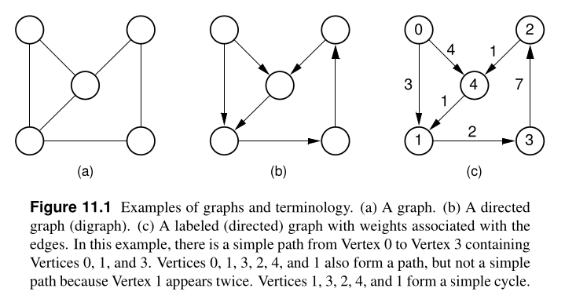
A graph with edges directed from one vertex to another is called a directed graph or digraph. A graph whose edges are not directed is called an undirected graph. A graph with labels associated with its vertices (as in Figure 11.1(c)) is called a labeled graph. Two vertices are adjacent if they are joined by an edge. Such vertices are also called neighbors. An edge connecting Vertices \(U\) and \(V\) is written \((U, V)\). Such an edge is said to be incident on Vertices \(U\) and \(V\). Associated with each edge may be a cost or weight. Graphs whose edges have weights (as in Figure 11.1(c)) are said to be weighted.
A sequence of vertices \(v_1 , v_2 , ..., v_n\) forms a path of length \(n − 1\) if there exist edges from \(v_i\) to \(v_{i}+1\) for \(1 \leq i < n\). A path is simple if all vertices on the path are distinct. The length of a path is the number of edges it contains. A cycle is a path of length three or more that connects some vertex v1 to itself. A cycle is simple if the path is simple, except for the first and last vertices being the same.
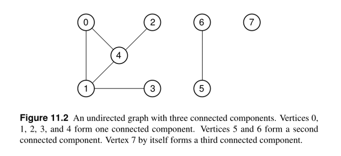
A subgraph \(S\) is formed from graph \(G\) by selecting a subset \(V_s\) of \(G\) ’s vertices and a subset \(E_s\) of \(G\) ’s edges such that for every edge \(E\) in \(E_s\) , both of \(E\) ’s vertices are in \(V_s\) .
An undirected graph is connected if there is at least one path from any vertex to any other. The maximally connected subgraphs of an undirected graph are called connected components. For example, Figure 11.2 shows an undirected graph with three connected components.
A graph without cycles is called acyclic. Thus, a directed graph without cycles is called a directed acyclic graph or DAG.
A free tree is a connected, undirected graph with no simple cycles. An equiv- alent definition is that a free tree is connected and has \(|V| - 1\) edges.
There are two commonly used methods for representing graphs. The adjacency matrix is illustrated by Figure 11.3(b). The adjacency matrix for a graph is a \(|V| \cdot |V|\) array. Assume that \(|V| = n\) and that the vertices are labeled from \(V_0\) through \(V_{n - 1}\) . Row i of the adjacency matrix contains entries for Vertex \(v_i\). Column \(j\) in row \(i\) is marked if there is an edge from \(v_i\) to \(v_j\) and is not marked otherwise. Thus, the adjacency matrix requires one bit at each position. Alternatively, if we wish to associate a number with each edge, such as the weight or distance between two vertices, then each matrix position must store that number. In either case, the space requirements for the adjacency matrix are \(O (|V|^2)\).
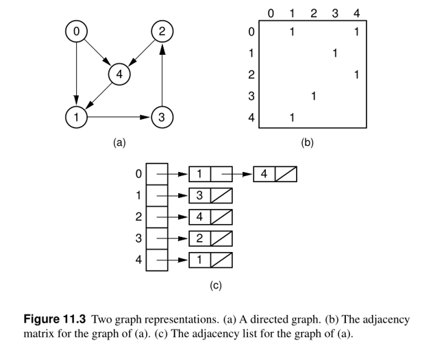
The second common representation for graphs is the adjacency list, illustrated by Figure 11.3(c). The adjacency list is an array of linked lists. The array is \(|V|\) items long, with position i storing a pointer to the linked list of edges for Ver- tex \(v_i\) . This linked list represents the edges by the vertices that are adjacent to Vertex \(v_i\) .
Direction Relationships
In direction relationships, we relays on the edges between the graph points to tell if it is either directed or un-directed graph representation, you can imagine edges like a bridge between two places or a road, in social relations (i.e. social media) it's the relation between two nodes, for instance, following a twitter account is a process of linking your node with this account, here we can distinguish two types of edges based on our needed implementation, if we are implementing something like, let's say twitter clone, we should consider that each node that will be linked to the other one, should be linked only one time.
For example, let's say we have 3 persons, 0, 1 and 2. person 0 follows 1, 2, meanwhile 1 follows 2 and 2 does not follow anybody, the appropriate representation should be something like:
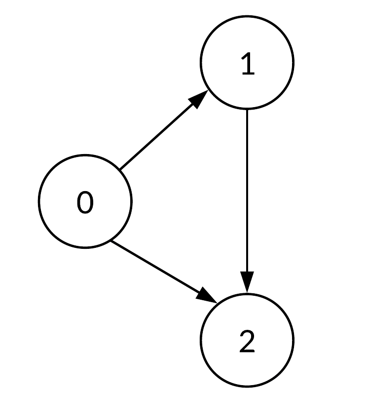
In the other hand, suppose that the same 3 person are dealing with Facebook friendship, in Facebook when you add someone, both of you are 'friends' and both of you appear in each other's friend list, therefore we had to make it undirected relation and have each node linked to the other one:
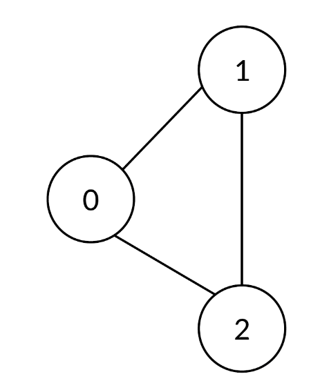
An un-directed graph in C(++), using array as an adjacency matrix, looks like the following:
class Graph { private: bool** adjacencyMatrix; int vertexCount; public: Graph(int vertexCount) { this->vertexCount = vertexCount; adjacencyMatrix = new bool*[vertexCount]; for (int i = 0; i < vertexCount; i++) { adjacencyMatrix[i] = new bool[vertexCount]; for (int j = 0; j < vertexCount; j++) adjacencyMatrix[i][j] = false; } } void addEdge(int i, int j) { if (i >= 0 && i < vertexCount && j > 0 && j < vertexCount) { adjacencyMatrix[i][j] = true; adjacencyMatrix[j][i] = true; } } void removeEdge(int i, int j) { if (i >= 0 && i < vertexCount && j > 0 && j < vertexCount) { adjacencyMatrix[i][j] = false; adjacencyMatrix[j][i] = false; } } bool isEdge(int i, int j) { if (i >= 0 && i < vertexCount && j > 0 && j < vertexCount) return adjacencyMatrix[i][j]; else return false; } ~Graph() { for (int i = 0; i < vertexCount; i++) delete[] adjacencyMatrix[i]; delete[] adjacencyMatrix; } };
More minimal representation, using vectors as an adjacency list:
#include<bits/stdc++.h> using namespace std; void addEdge(vector<int> adj[], int u, int v) { adj[u].push_back(v); adj[v].push_back(u); } void printGraph(vector<int> adj[], int V) { for (int v = 0; v < V; ++v) { cout << "\n Adjacency list of vertex " << v << "\n head "; for (auto x : adj[v]) cout << "-> " << x; printf("\n"); } } int main() { int V = 5; vector<int> adj[V]; addEdge(adj, 0, 1); addEdge(adj, 0, 4); addEdge(adj, 1, 2); addEdge(adj, 1, 3); addEdge(adj, 1, 4); addEdge(adj, 2, 3); addEdge(adj, 3, 4); printGraph(adj, V); return 0; }
If we want to make any of those implementations use directed graph instead, we just have to
comment the corresponding edge adding, i.e. we have to comment this adjacencyMatrix[j][i]
= false; in the first representation, and adj[v].push_back(u); in the other one.
Adjacency Matrix vs. Adjacency List
In the last example I used an adjacency list, like a vector or an array, to represent the relationships between nodes. In adjacency list the first node of the linked list represents the vertex and the remaining lists connected to this node represents the vertices to which this node is connected. This representation can also be used to represent a weighted graph. The linked list can slightly be changed to even store the weight of the edge, it looks like this in memory:
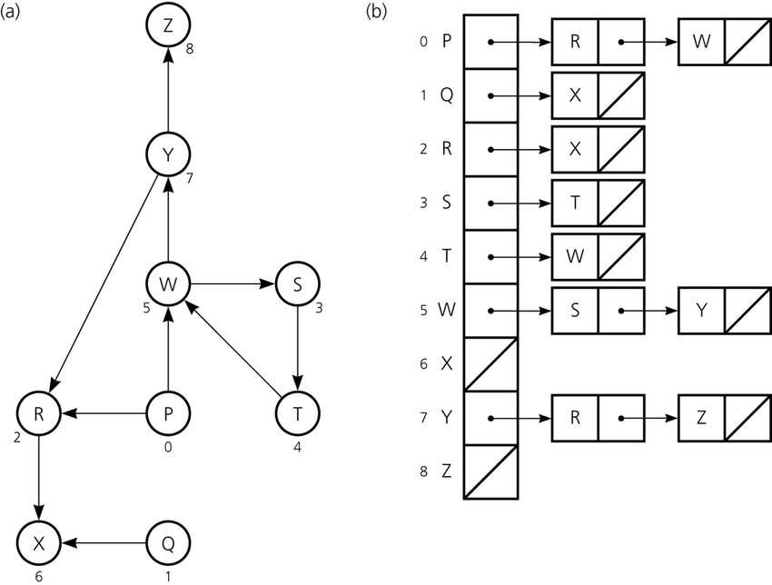
a is the adjacency List representation of the graph aHowever, such a representation is not always efficient, at least from complexity perspective, if we need to know the relation between two nodes, we can't ever know that in constant time since we have to traverse the whole list to check if a node is included on it or node (so we can tell what is the relation between them), it's \(O(N)\) complexity.
In the other hand, the adjacency matrix represent looks like this:
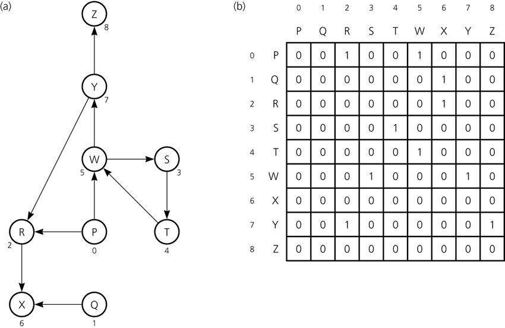
b is the Adjacency Matrix representation of the graph aCan we know the relation between any two nodes in a constant time? Yes. We just have to check which node in the other's list, i.e. if we want to know the relationship between W and T, we have to check \(W[T]\) and \(T[W]\), and we are done. It's very efficient from complexity perspective, however it's not the best for memory.
Here's a comparison between each representation:
| Operation | Adjacency Matrix | Adjacency List |
|---|---|---|
| Storage Space | Required \(O(V^2)\) to represent \(V \cdot V\) matrix | We store only the linked nodes, in the worst case that a node is connected with all other nodes, we have \(O(V)\) required space |
| Adding Vertex | Adding vertex require adding new dimensional to matrix, by copying this will require \(O(V^2)\) | We just need to push a new element in list, it takes \(O(1)\) |
| Adding an edge | To add a new edge we only need to change the boolean value from zero to one, so it's \(O(1)\) | We need to make some insertion, takes \(O(1)\) |
| Querying | \(O(1)\) to find the existing edge for some node | \(O(V)\) to find all relation for node. |
Multigraph (Multi-edges graph)
Multigraph is an obscure data structure, since it can be represented in some other ways using complex forms of regular undirected graph, however it is not hard to implement. In implementing something like roads between points, there are many cases that we have more than one roads therefore we have to have this roads recorded within an adjacency list:
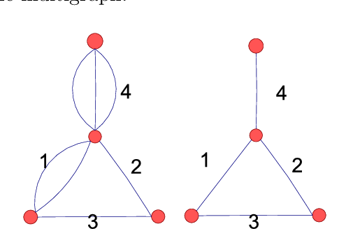
An appropriate node to represent this:
struct Link; struct Node { Link *firstIn, *lastIn, *firstOut, *lastOut; ... node data ... }; struct Link { Node *from, *to; Link *prevInFrom, *nextInFrom, *prevInTo, *nextInTo; ... link data ... };
For each Node there are two double-linked lists, one for incoming links and one for outgoing links. Each Link knows the starting and ending Node and also has the prev and next pointers for the two lists that contain it (the outgoing list in the "from" node and the incoming list in the "to" node).
Weighted Graph
We can consider all of the last implementations as an unweghted graph representations, we don't really care about the specifications of an edge between two nodes. However, in a lot of applications we need so. For instance, we need to calculate the distance or the time that each road (edge) costs, as well we may lose some sorta of 'points' or win additional poitns when we use some way rather than the other, to implement such a model we use a weighted graph i.e. a graph with a value within edges.
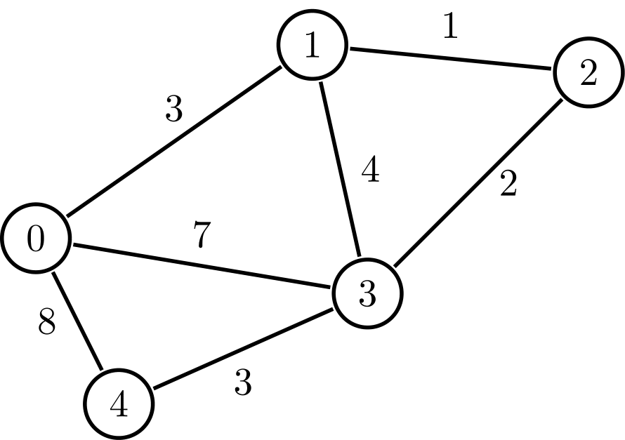
Something like that shouldn't be hard to implement, we just need to map each edge to some value:
#include <bits/stdc++.h> using namespace std; void addEdge(vector <pair<int, int> > adj[], int u, int v, int wt) { adj[u].push_back(make_pair(v, wt)); adj[v].push_back(make_pair(u, wt)); } void printGraph(vector<pair<int,int> > adj[], int V) { int v, w; for (int u = 0; u < V; u++) { cout << "Node " << u << " makes an edge with \n"; for (auto it = adj[u].begin(); it!=adj[u].end(); it++) { v = it->first; w = it->second; cout << "\tNode " << v << " with edge weight =" << w << "\n"; } cout << "\n"; } } int main() { int V = 5; vector<pair<int, int> > adj[V]; addEdge(adj, 0, 1, 10); addEdge(adj, 0, 4, 20); addEdge(adj, 1, 2, 30); addEdge(adj, 1, 3, 40); addEdge(adj, 1, 4, 50); addEdge(adj, 2, 3, 60); addEdge(adj, 3, 4, 70); printGraph(adj, V); return 0; }
Transpose Graph
The transpose of a graph is the converse, transpose or reverse of some directed graph.
Consider the following figure:
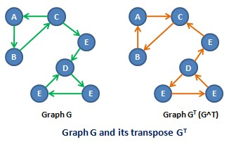
To find the transpose of some graph, we traverse the adjacency list and we find a vertex \(v\) in the adjacency list of vertex u which indicates an edge from \(u\) to \(v\) in main graph, we just add an edge from \(v\) to \(u\) in the transpose graph.
#include <bits/stdc++.h> using namespace std; void addEdge(vector<int> adj[], int src, int dest) { adj[src].push_back(dest); } void displayGraph(vector<int> adj[], int v) { for (int i = 0; i < v; i++) { cout << i << "--> "; for (int j = 0; j < adj[i].size(); j++) cout << adj[i][j] << " "; cout << "\n"; } } void transposeGraph(vector<int> adj[], vector<int> transpose[], int v) { for (int i = 0; i < v; i++) for (int j = 0; j < adj[i].size(); j++) addEdge(transpose, adj[i][j], i); } int main() { int v = 5; vector<int> adj[v]; addEdge(adj, 0, 1); addEdge(adj, 0, 4); addEdge(adj, 0, 3); addEdge(adj, 2, 0); addEdge(adj, 3, 2); addEdge(adj, 4, 1); addEdge(adj, 4, 3); vector<int> transpose[v]; transposeGraph(adj, transpose, v); displayGraph(transpose, v); return 0; }
In the case of dealing with adjacency matrix, we just have to reverse the matrix.
void transpose(int A[][N], int B[][N]) { int i, j; for (i = 0; i < N; i++) for (j = 0; j < N; j++) B[i][j] = A[j][i]; }
Definition Sheet
Words are being kinda confusing in AD's, the following are the most needed definitions in graphs, in the case of ambiguity you can backtrack the definitions from here.
| Idiom | Definition |
|---|---|
| Neighbors | A vertex \(u\) is a neighbor of (or equivalently adjacent to) a vertex \(v\) in a graph \(G = (V, E)\) if there is an edge \({u, v} \in E\). For a directed graph a vertex \(u\) is an in-neighbor of a vertex \(v\) if \((u, v) \in E\) and an out-neighbor if \((v, u) \in E\). We also say two edges or arcs are neighbors if they share a vertex. |
| Neighborhood | For an undirected graph \(G = (V, E)\), the neighborhood \(N_{G}(v)\) of a vertex \(v \in V\) is its set of all neighbors of \(v\), i.e., \(N_{G}(v) = {u {u, v} \in E}\). For a directed graph we use \(N_{G}(v)\) to indicate the set of out-neighbors and \(N_{G} (v)\) to indicate the set of in-neighbors of \(v\). If we use \(N_{G} (v)\) for a directed graph, we mean the out neighbors. The neighborhood of a set of vertices \(U \subseteq V\) is the union of their neighborhoods. |
| Incident | We say an edge is incident on a vertex if the vertex is one of its endpoints. Similarly we say a vertex is incident on an edge if it is one of the endpoints of the edge. |
| Reachability & Connectivity | A vertex \(v\) is reachable from a vertex \(u\) in \(G\) if there is a path starting at \(v\) and ending at \(u\) in \(G\). We use \(R_{G}(v)\) to indicate the set of all vertices reachable from \(v\) in \(G\). An undirected graph is connected if all vertices are reachable from all other vertices. A directed graph is strongly connected if all vertices are reachable from all other vertices. |
| Cycle | In a directed graph a cycle is a path that starts and ends at the same vertex. A cycle can have length one (i.e. a self loop). A simple cycle is a cycle that has no repeated vertices other than the start and end vertices being the same. In an undirected graph a (simple) cycle is a path that starts and ends at the same vertex, has no repeated vertices other than the first and last, and has length at least three. In this course we will exclusively talk about simple cycles and hence, as with paths, we will often drop simple. |
| Trees and forests | An undirected graph with no cycles is a forest and if it is connected it is called a tree. A directed graph is a forest (or tree) if when all edges are converted to undirected edges it is undirected forest (or tree). A rooted tree is a tree with one vertex designated as the root. For a directed graph the edges are typically all directed toward the root or away from the root. |
| Directed acyclie graph | A directed graph with no cycles is a directed acyclic graph (DAG). |
| Distance | The distance \(\delta G(u, v)\) from a vertex \(u\) to a vertex \(v\) in a graph \(G\) is the shortest path (minimum number of edges) from \(u\) to \(v\). It is also referred to as the shortest path length from \(u\) to \(v\). |
| Diameter | The diameter of a graph is the maximum shortest path length over all pairs of vertices. |
| Multigraph | Sometimes graphs allow multiple edges between the same pair of vertices, called multi-edges. Graphs with multi-edges are called multi-graphs. We will allow multi-edges in a couple algorithms just for convenience |
| Directed Graph | See Directed Graph |
| Undirected Graph | See Unirected Graph |
| Mother Vertex | A mother vertex in a graph \(G = (V,E)\) is a vertex \(v\) such that all other vertices in \(G\) can be reached by a path from \(v\). |
| Strongly Connected Components | A directed graph is strongly connected if there is a path between all pairs of vertices. |
| Equivalence of nodes | For a directed graph \(G\) = \((V,E)\), \(\forall u, v \in V, u \equiv v\) if \(\exists a\) path from \(u\) to \(v\) and a path from \(v\) to \(u\) |
| Biconnected Components | See Biconnected Components |
| Articulation Point |
Graph Traversal
Given any starting vertex, we can find all the reachable vertices from the start point, there are many algorithms that can do this, the simplest of which is depth-frist search.
Depth First Search (DFS)
As the name implies, DFS enumerate the deepest paths and only backtracking when it reaches a dead end or an already-visited section of the graph. We can simplify the process of the algorithm as follows:
- DFS keeps track of the attribute of each vertex, let it be color, unvisited vertices are white by default. Vertices that have been visited but still may be backtracked are colored gray. Vertices which are completely processed are colored black. It prevents loops by skipping non-white vertices.
- Instead of just marking visited vertices, the algorithm also keeps track of the tree generated by the depth-first traversal. It does so by marking the “parent” of each visited vertex, aka the vertex that DFS visited immediately prior to visiting the child.
The algorithm takes an input a start vertex \(s\), be default it shouldn't really return anything, you can make it return the timestamp of finishing the traversing process.
void DFS(int v) { visited[v] = true; // Do somtmeting here list<int>::iterator i; for (i = adj[v].begin(); i != adj[v].end(); ++i) if (!visited[*i]) DFS(*i); }
There is also an iterative approach, which is just the same as the recursive one but in the iterative approach: You first insert all the elements into the stack - and then handle the head of the stack [which is the last node inserted] - thus the first node you handle is the last child.
In the recursive approach: You handle each node when you see it. Thus the first node you handle is the first child:
void Graph::DFS(int s) { vector<bool> visited(V, false); stack<int> stack; stack.push(s); while (!stack.empty()) { int s = stack.top(); stack.pop(); if (!visited[s]) { // Do somthing here visited[s] = true; } for (auto i = adj[s].begin(); i != adj[s].end(); ++i) if (!visited[*i]) stack.push(*i); } }
As the name implies, DFS enumerate the deepest paths and only backtracking when it reaches a dead end or an already-visited section of the graph. We can simplify the process of the algorithm as follows:
- DFS keeps track of the attribute of each vertex, let it be color, unvisited vertices are white by default. Vertices that have been visited but still may be backtracked are colored gray. Vertices which are completely processed are colored black. It prevents loops by skipping non-white vertices.
- Instead of just marking visited vertices, the algorithm also keeps track of the tree generated by the depth-first traversal. It does so by marking the “parent” of each visited vertex, aka the vertex that DFS visited immediately prior to visiting the child.
The algorithm takes an input a start vertex \(s\), be default it shouldn't really return anything, you can make it return the timestamp of finishing the traversing process.
void DFS(int v) { visited[v] = true; // Do somtmeting here list<int>::iterator i; for (i = adj[v].begin(); i != adj[v].end(); ++i) if (!visited[*i]) DFS(*i); }
There is also an iterative approach, which is just the same as the recursive one but in the iterative approach: You first insert all the elements into the stack - and then handle the head of the stack [which is the last node inserted] - thus the first node you handle is the last child.
In the recursive approach: You handle each node when you see it. Thus the first node you handle is the first child:
void Graph::DFS(int s) { vector<bool> visited(V, false); stack<int> stack; stack.push(s); while (!stack.empty()) { int s = stack.top(); stack.pop(); if (!visited[s]) { // Do somthing here visited[s] = true; } for (auto i = adj[s].begin(); i != adj[s].end(); ++i) if (!visited[*i]) stack.push(*i); } }
Strongly Connected Components (SCC)
We will see that any graph \(G = (V, E)\) can be partitioned into strongly connected components. For a component to be strongly connected, every vertex in the component must be reachable from every other vertex in the same component. (See the definition of equivalence node in the definition sheet).
Kosarju's Algorithm
Kosaraju-Sharir's algorithm (also known as Kosaraju's algorithm) is a linear time algorithm to find the strongly connected components of a directed graph. Aho, Hopcroft and Ullman credit it to S. Rao Kosaraju and Micha Sharir. Kosaraju suggested it in 1978 but did not publish it, while Sharir independently discovered it and published it in 1981.
The algorithm is baiscally like following:
- Create an empty stack
sand traverse the graph using DFS In DFS, avert each recursive calling for the adjacent vertices of a vertex, push the vertex to stack. For example consider the following graph: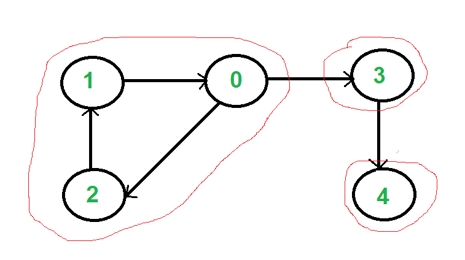
The output of the DFS traverse should be:0, 3, 4, 2, 1, so the stack should be1, 2, 4, 3, 0 - Reverse directions of all arcs to obtain the transpose graph. See transpose graph.
- One by one pop a vertex from S while S is not empty. Let the popped vertex be \(v\). Take \(v\) as source and do DFS. The DFS starting from \(v\) prints strongly connected component of \(v\). In the above example, we process vertices in order 0, 3, 4, 2, 1 (One by one popped from stack).
For proove, tracing and moer info, See Strongly Connected Components.
Implementations in C(++):
void DFS(int v, bool visited[]); Graph getTranspose() { Graph g(V); for (int v = 0; v < V; v++) { list<int>::iterator i; for(i = adj[v].begin(); i != adj[v].end(); ++i) { g.adj[*i].push_back(v); } } return g; } void fillOrder(int v, bool visited[], stack<int> &Stack) { visited[v] = true; list<int>::iterator i; for(i = adj[v].begin(); i != adj[v].end(); ++i) if(!visited[*i]) fillOrder(*i, visited, Stack); Stack.push(v); } void printSCCs() { stack<int> Stack; bool *visited = new bool[V]; for(int i = 0; i < V; i++) visited[i] = false; for(int i = 0; i < V; i++) if(visited[i] == false) fillOrder(i, visited, Stack); Graph gr = getTranspose(); for(int i = 0; i < V; i++) visited[i] = false; while (Stack.empty() == false) { int v = Stack.top(); Stack.pop(); if (visited[v] == false) { DFS(v, visited); cout << endl; } } }
TODO Tarjan's Algorithm
Detecting Cycles
Hint: Review cycle definition in the definition sheet above
Directed Graphs
Using Depth First Search
We can detect cycles in directed graphs using DFS. This is based on the fact that there is a cycle in a graph only if there is a back edge present in the graph. A back edge is an edge that is from a node to itself (self-loop) or one of its ancestors in the tree produced by DFS.
To detect a back edge, keep track of vertices currently in the recursion stack of function for DFS traversal. If a vertex is reached that is already in the recursion stack, then there is a cycle in the tree. The edge that connects the current vertex to the vertex in the recursion stack is a back edge.
The algorithm is the following:
- Initially we take the 3 Sets(White,Black and Grey) and stored all the nodes in white set.
- Then select a node from white set, then remove it from white set and put into the grey set and then perform DFS traversal.
- During traversal, for every neighbouring node which is present in white set, move it from white set to grey set.
- During DFS traversal if we find any neighbouring node which is present in a grey set, Hence cycle is present.
- During traversal, put a node into the black set if it has no more neighbouring nodes present in white
#include<bits/stdc++.h> using namespace std; set<int>white; set<int>grey; set<int>black; int flag=0; void edge(vector<int>adj[],int u,int v){ adj[u].push_back(v); } void CycleDetect(int u,vector<int>adj[]){ white.erase(u); grey.insert(u); for(int i=0;i<adj[u].size();i++){ if(white.find(adj[u][i])!=white.end()) { CycleDetect(adj[u][i],adj); } if(grey.find(adj[u][i])!=grey.end()){ //check if its is present or not in grey set flag=1; } } black.insert(u);//put into the black set grey.erase(u);//remove from the grey set } int main(){ vector<int>adj[5];//vector of array to store the graph //input for edges edge(adj,0,2); edge(adj,0,1); edge(adj,1,3); edge(adj,2,0); edge(adj,3,3); edge(adj,2,3); edge(adj,2,4); for(int i=0;i<5;i++){ white.insert(i); } CycleDetect(0,adj); if(flag==0)cout<<"Graph does not contain cycle"<<endl; else cout<<"Graph contain cycle"<<endl; return 0; }
Biconnected Components
The operations that we have implemented thus far are simple extensions of depth first and breadth first search. The next operation we implement is more complex and requires the introduction of additional terminology. We begin by assuming that \(G\) is an undirected connected graph.
An articulation point is a vertex \(v\) of \(G\) such that the deletion of \(v\), together with all edges incident on \(v\), produces a graph, \(G\), that has at least two connected com- ponents. For example, the connected graph of the following figure has four articulation points, vertices 1,3,5, and 7.
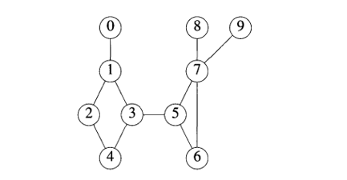
A biconnected graph is a connected graph that has no articulation points. The graph of the previous figure is not a biconnected graph. In many graph applications, articulation points are undesirable. For instance, suppose that the graph of the last figure represents a communication network. In such graphs, the vertices represent communication stations and the edges represent communication links. Now suppose that one of the stations that is an articulation point fails. The result is a loss of communication not just to and from that single station, but also between certain other pairs of stations.
A biconnected component of a connected undirected graph is a maximal bicon- nected subgraph, \(H\), of \(G\). By maximal, we mean that \(G\) contains no other subgraph that is both biconnected and properly contains \(H\). It is easy to verify that two biconnected components of the same graph have no more than one vertex in common. This means that no edge can be in two or more bicon- nected components of a graph. Hence, the biconnected components of G partition the edges of G.
We can find the biconnected components of a connected undirected graph, G, by
using any depth first spanning tree of G. For example, the function call dfs (3) applied to
the graph of the last graph produces the spanning tree of the following figure:
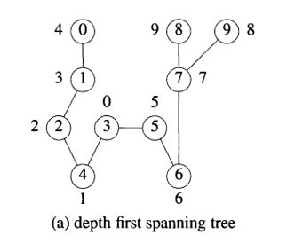
If redrawn the tree in the following figure:
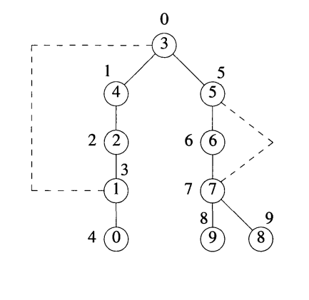
To better reveal its tree structure. The numbers outside the vertices in either figure give the sequence in which the vertices are visited during the depth first search. We call this number the depth first number, or \(dfn\), of the vertex. For example, \(dfn (3) =0\), \(dfn (0) =4\), and \(dfn (9) = 8\). Notice that vertex 3, which is an ancestor of both vertices 0 and 9, has a lower dfn than either of these vertices. Generally, if \(u\) and \(v\) are two vertices, and u is an ancestor of v in the depth first spanning tree,· then \(dfn (u) < dfn (v)\).
that we cannot reach an ancestor of u using a path that consists of only \(w\), descendants of These observations lead us to define a value, low, for each vertex of \(G\) such that low \((u)\) is the lowest depth first number that we can reach from \(u\) using a path of descendants followed by at most one back edge:
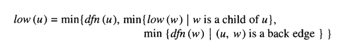
Therefore, *we can say that \(u\) is an articulation point if \(u\) is either the root of the spanning tree and has two or more children, or \(u\) is not the root and \(u\) has a child \(w\) such that \(low (w) \geq dfn (u)\).* The following table is the analysis for the last example:
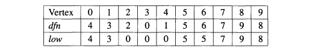
Form that table we conclude that vertex 1 is an articulation point since it has a child 0 such that low (0) = 4 ~ dfn (1) = 3. Vertex 7 is also an articulation point since low (8) =9 ~ dfn (7) =7, as is vertex 5 since low (6) =5 ~ dfn (5) = 5. Finally, we note that the root, vertex 3, is an articulation point because it has more than one child.
// A C++ program to find biconnected components in a given undirected graph #include <iostream> #include <list> #include <stack> #define NIL -1 using namespace std; int count = 0; class Edge { public: int u; int v; Edge(int u, int v); }; Edge::Edge(int u, int v) { this->u = u; this->v = v; } // A class that represents an directed graph class Graph { int V; // No. of vertices int E; // No. of edges list<int>* adj; // A dynamic array of adjacency lists // A Recursive DFS based function used by BCC() void BCCUtil(int u, int disc[], int low[], list<Edge>* st, int parent[]); public: Graph(int V); // Constructor void addEdge(int v, int w); // function to add an edge to graph void BCC(); // prints strongly connected components }; Graph::Graph(int V) { this->V = V; this->E = 0; adj = new list<int>[V]; } void Graph::addEdge(int v, int w) { adj[v].push_back(w); E++; } // A recursive function that finds and prints strongly connected // components using DFS traversal // u --> The vertex to be visited next // disc[] --> Stores discovery times of visited vertices // low[] -- >> earliest visited vertex (the vertex with minimum // discovery time) that can be reached from subtree // rooted with current vertex // *st -- >> To store visited edges void Graph::BCCUtil(int u, int disc[], int low[], list<Edge>* st, int parent[]) { // A static variable is used for simplicity, we can avoid use // of static variable by passing a pointer. static int time = 0; // Initialize discovery time and low value disc[u] = low[u] = ++time; int children = 0; // Go through all vertices adjacent to this list<int>::iterator i; for (i = adj[u].begin(); i != adj[u].end(); ++i) { int v = *i; // v is current adjacent of 'u' // If v is not visited yet, then recur for it if (disc[v] == -1) { children++; parent[v] = u; // store the edge in stack st->push_back(Edge(u, v)); BCCUtil(v, disc, low, st, parent); // Check if the subtree rooted with 'v' has a // connection to one of the ancestors of 'u' // Case 1 -- per Strongly Connected Components Article low[u] = min(low[u], low[v]); // If u is an articulation point, // pop all edges from stack till u -- v if ((disc[u] == 1 && children > 1) || (disc[u] > 1 && low[v] >= disc[u])) { while (st->back().u != u || st->back().v != v) { cout << st->back().u << "--" << st->back().v << " "; st->pop_back(); } cout << st->back().u << "--" << st->back().v; st->pop_back(); cout << endl; count++; } } // Update low value of 'u' only of 'v' is still in stack // (i.e. it's a back edge, not cross edge). // Case 2 -- per Strongly Connected Components Article else if (v != parent[u]) { low[u] = min(low[u], disc[v]); if (disc[v] < disc[u]) { st->push_back(Edge(u, v)); } } } } // The function to do DFS traversal. It uses BCCUtil() void Graph::BCC() { int* disc = new int[V]; int* low = new int[V]; int* parent = new int[V]; list<Edge>* st = new list<Edge>[E]; // Initialize disc and low, and parent arrays for (int i = 0; i < V; i++) { disc[i] = NIL; low[i] = NIL; parent[i] = NIL; } for (int i = 0; i < V; i++) { if (disc[i] == NIL) BCCUtil(i, disc, low, st, parent); int j = 0; // If stack is not empty, pop all edges from stack while (st->size() > 0) { j = 1; cout << st->back().u << "--" << st->back().v << " "; st->pop_back(); } if (j == 1) { cout << endl; count++; } } }
Problems
Reach The Mother Vertex
Hint: Review the Mother Vertex in the definition sheet above
The mother vertex in the following graph is [1, 3, 4]:
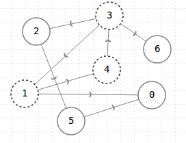
Because using any of those points we can traverse the whole graph (all vertices). To find those points, we have to consider the 3 cases of graphs:
- Dealing with undirected connected graph: In any undirected graph, all the points are mother vertices since we can reach any point from wherever vertex.
- Dealing with disconected graphs: There is not a mother vertex in disconected graphs.
- Dealing with directed connected graphs: there can be more than 2 mother vertices.
We can solve such a problem using DFS algorithm to traverse all vertices and find whether we can reach all the vertices from an \(x\) point (let \(x\) by any vertex), this tekes \(O(V(V+E))\) time, which is inefficient.
Rather, we can make a use of the Kosaraju's SCC algorithm (See SCC), In a graph of strongly connected components, mother vertices are always vertices of source component in component graph.
findMother() { // visited[] is used for DFS. Initially all are // initialized as not visited vector <bool> visited(V, false); // To store last finished vertex (or mother vertex) int v = 0; // Do a DFS traversal and find the last finished // vertex for (int i = 0; i < V; i++) { if (visited[i] == false) { DFSUtil(i, visited); v = i; } } // If there exist mother vertex (or vertices) in given // graph, then v must be one (or one of them) // Now check if v is actually a mother vertex (or graph // has a mother vertex). We basically check if every vertex // is reachable from v or not. // Reset all values in visited[] as false and do // DFS beginning from v to check if all vertices are // reachable from it or not. fill(visited.begin(), visited.end(), false); DFSUtil(v, visited); for (int i=0; i<V; i++) if (visited[i] == false) return -1; return v;
There is many ways to resolve the same problem if we want to get more than 1 mother vertex, for example we can tack the last \(n\) visited points in the DFS process and check them.
TODOs Topics [0/10]
TODO BFS
TODO Handling Disconnected graphs
TODO Bellman–Ford algorithm
TODO Floyd–Warshall algorithm
TODO Union-Find Algorithm
TODO Tarjan's strongly connected components algorithm
TODO Shortest Path
TODO Longest Path
TODO Tree
TODO Tree Diamteter (aka. Logest Path)
Footnotes:
Some graph applications require that a given pair of vertices can have multiple or parallel edges connecting them, or that a vertex can have an edge to itself.